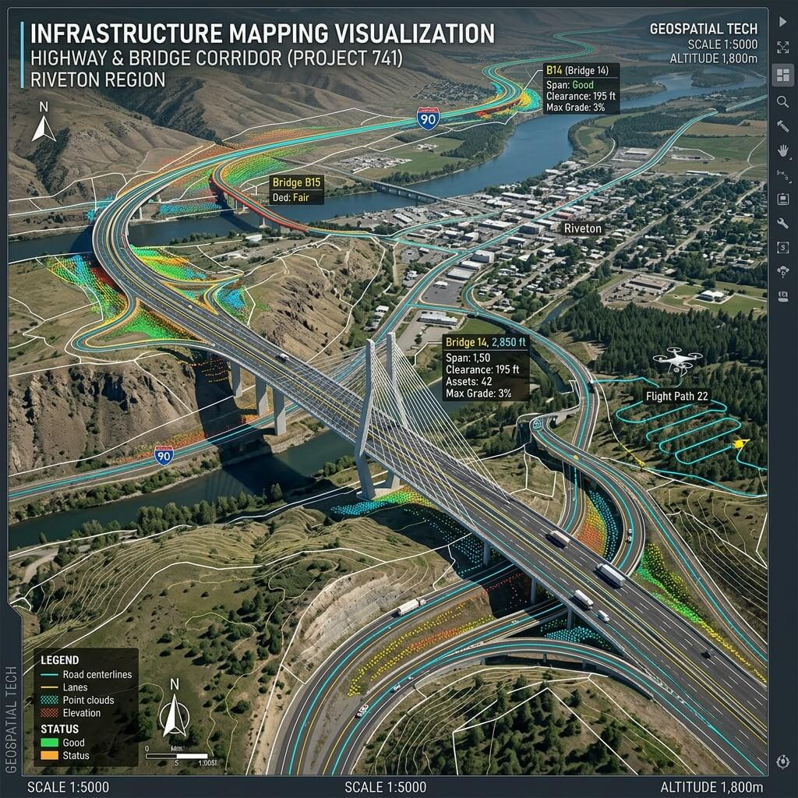
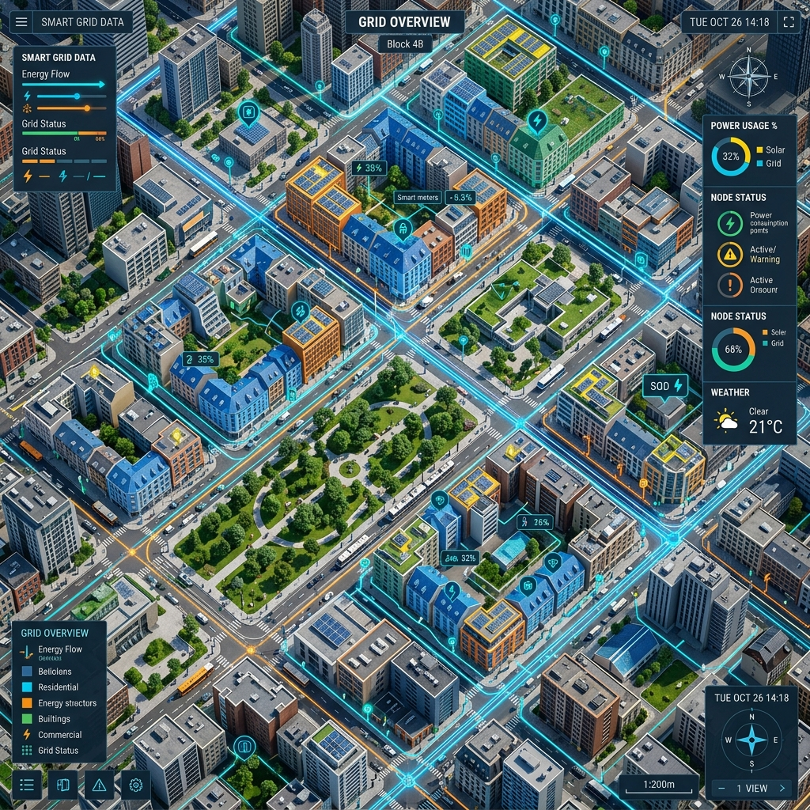
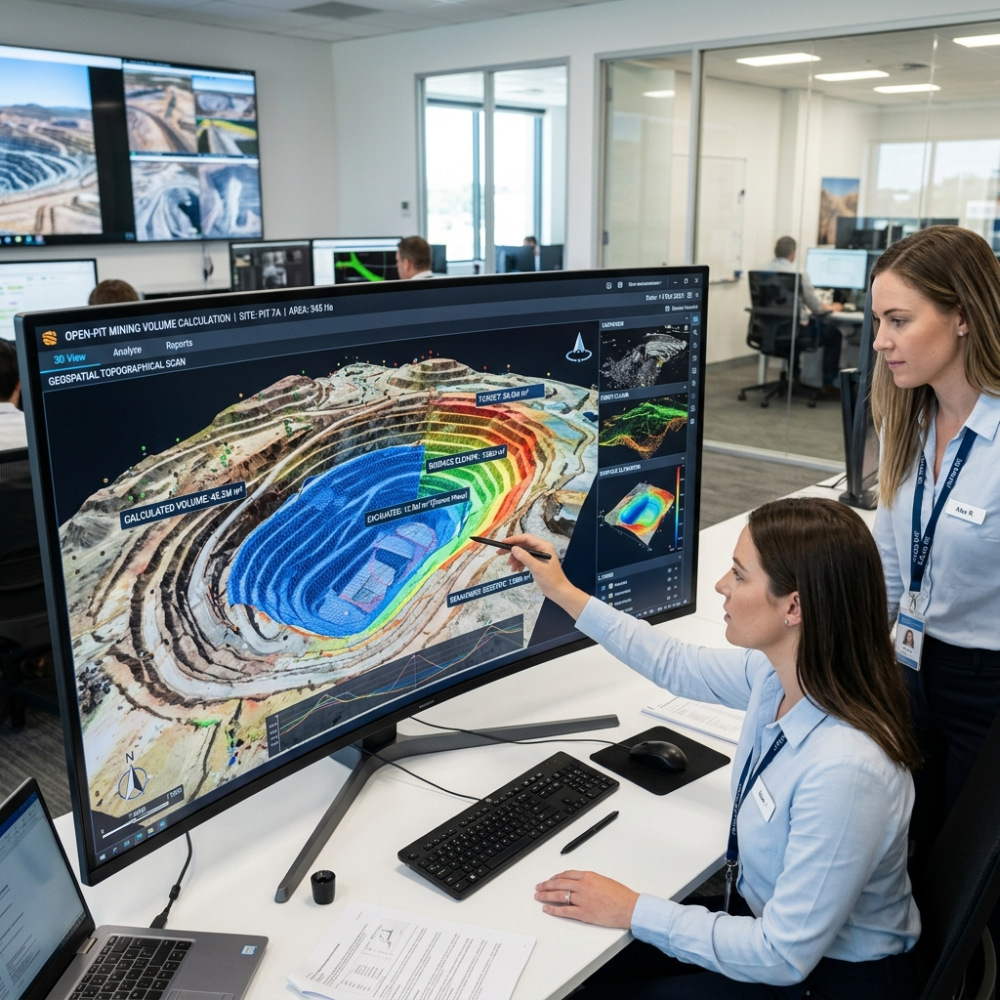
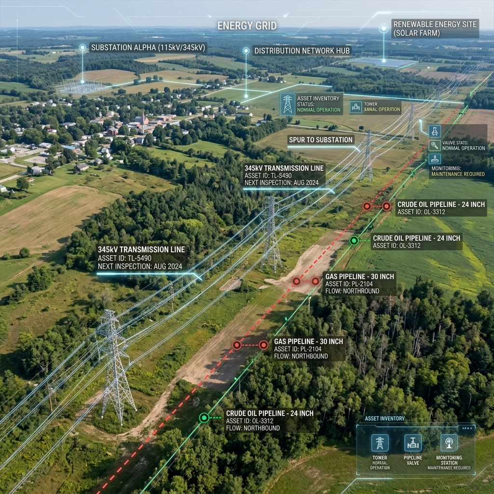

Airowtek's geospatial intelligence is deployed across the most demanding industry verticals in India and beyond.
At Airowtek, we understand that every industry faces unique spatial challenges. From tracking massive earthmoving operations in real-time to meticulously modeling urban utility networks, our cross-industry expertise empowers decision-makers to operate with unprecedented precision. Explore how our cutting-edge geospatial solutions drive efficiency, safety, and growth across diverse sectors.

Road networks, highways, railways, bridges, and corridor mapping for NHAI, RVNL, and state PWDs.

Master plan preparation, land use analysis, zoning studies, and change detection for municipal authorities.

Open-pit volume calculations, haul road mapping, stockpile monitoring, and subsidence detection.
Crop health monitoring, NDVI/NDRE processing, irrigation planning, and yield estimation analysis.
Base map creation, 3D city modelling, utility GIS, and digital twin data for smart city missions.

Transmission line mapping, pipeline corridor processing, and utility asset inventory using LiDAR and photogrammetry data.